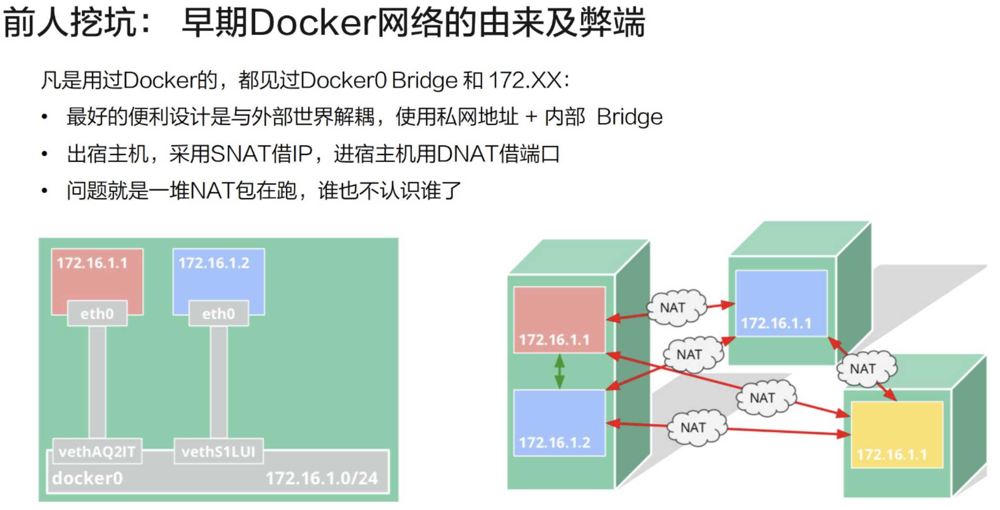
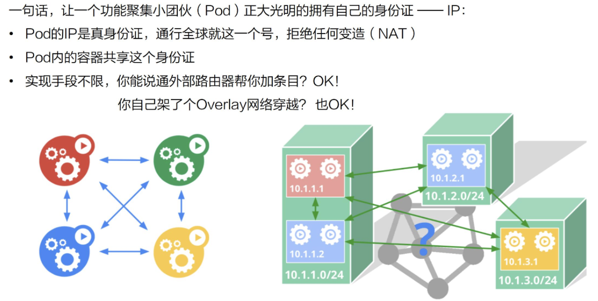
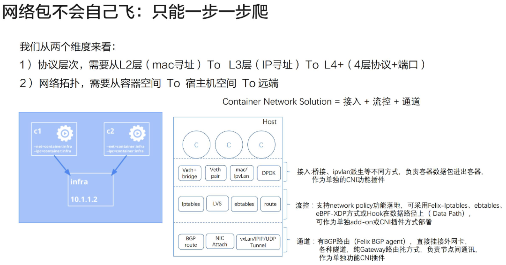
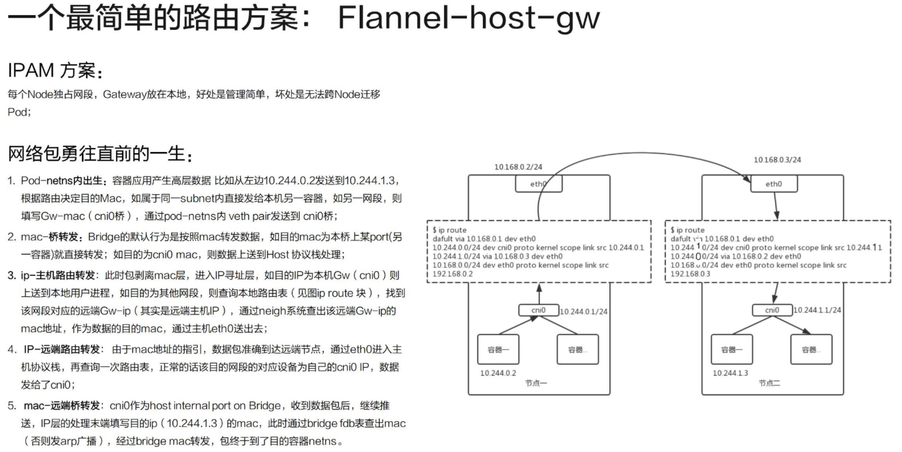
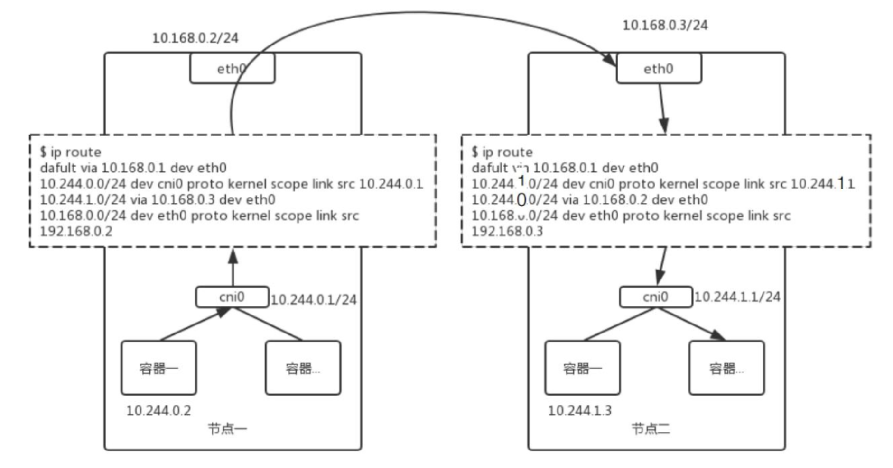
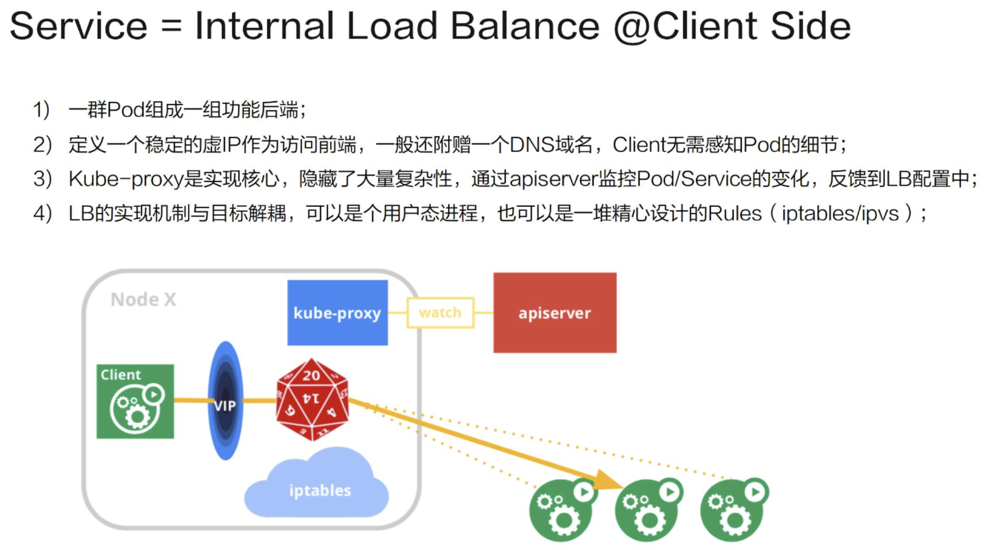
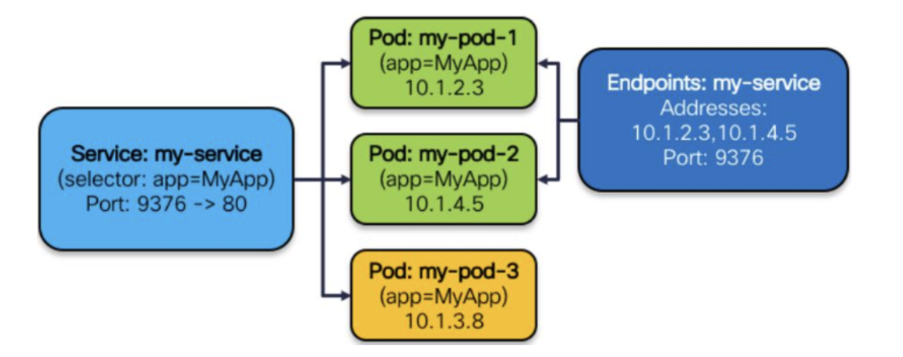
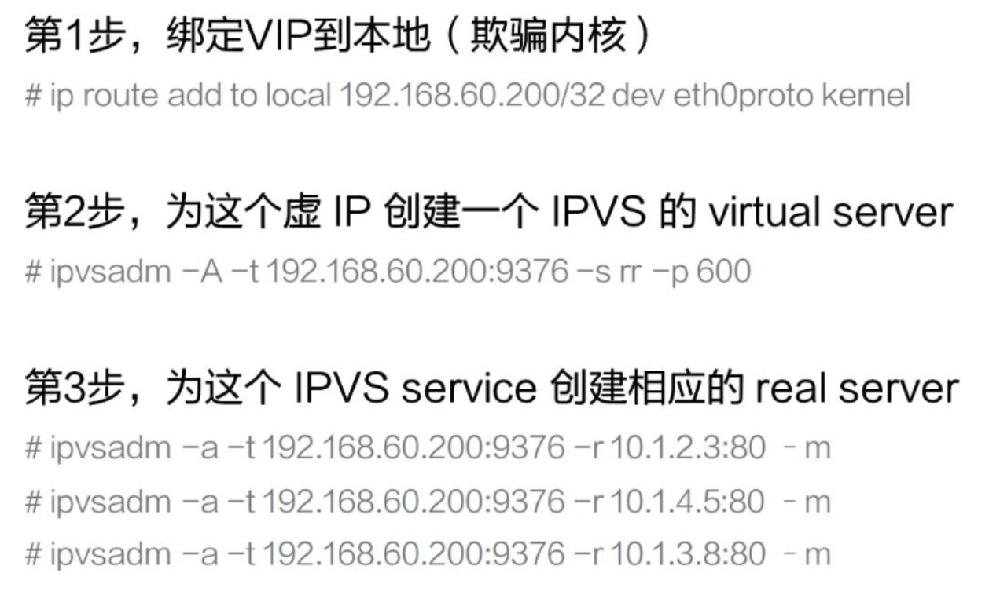
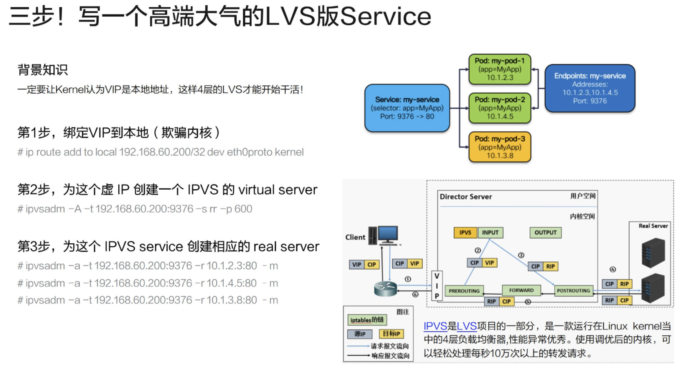
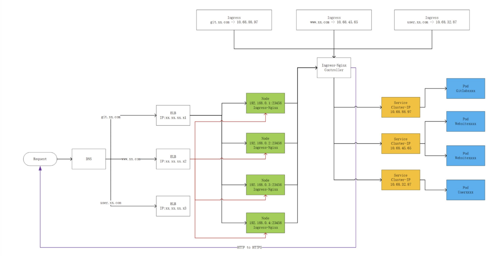

网络模型进阶
目标
- kubernetes 网络的演化历史
- Pod 如何上网
- Service 如何工作
- 负载均衡
- 思考问题
- 总结
kubernetes 网络的演化历史
早期Docker网络的由来及弊端

容器网络发端于 Docker 的网络。Docker 使用了一个比较简单的网络模型，即内部的网桥加内部的保留 IP. 这种设计的好处在于: 容器的网络和外部世界是解耦的，无需占用宿主机的 IP 或者宿主机的资源，完全是虚拟的。 它的设计初衷是: 当需要访问外部世界时，会采用 SNAT 这种方法来借用 Node 的 IP 去访问外面的服务。 比如容器需要对外提供服务的时候，所用的是 DNAT 技术，也就是在 Node 上开一个端口，然后通过 iptable 或者别的某些机制，把流导入到容器的进程上以达到目的。
该模型的问题在于，外部网络无法区分哪些是容器的网络与流量、哪些是宿主机的网络与流量。比如，如果要做一个高可用的时候，172.16.1.1 和 172.16.1.2 是拥有同样功能的两个容器，此时我们需要将两者绑成一个 Group 对外提供服务，而这个时候我们发现从外部看来两者没有相同之处，它们的 IP 都是借用宿主机的端口，因此很难将两者归拢到一起。
kubernetes 的解决方案

Kubernetes 提出了这样一种机制:即每一个 Pod，也就是一个功能聚集小团伙应有自己的“身份证”，或者说 ID。在 TCP 协议栈上，这个 ID 就是 IP。 这个 IP 是真正属于该 Pod 的，外部世界不管通过什么方法一定要给它。对这个 Pod IP 的访问就是真正对它的服务的访问，中间拒绝任何的变造。比如以 10.1.1.1 的 IP 去访问 10.1.2.1 的 Pod，结果到了 10.1.2.1 上发现，它实际上借用的是宿主机的 IP，而不是源 IP，这样是不被允许的。Pod 内部会要求共享这个 IP，从而解决了一些功能内聚的容器如何变成一个部署的原子的问题。
Kubernetes 对怎么实现这个模型其实是没有什么限制的，用 underlay 网络来控制外部路由器进行导流是可以的；如果希望解耦，用 overlay 网络在底层网络之上再加一层叠加网，这样也是可以的。总之，只要达到模型所要求的目的即可。
Pod 如何上网
容器网络的网络包究竟是怎么传送的？可以从以下两个维度来看：
- 协议层次
- 网络拓扑

协议层次
它和 TCP 协议栈的概念是相同的，需要从两层、三层、四层一层层地摞上去，发包的时候从右往左，即先有应用数据，然后发到了 TCP 或者 UDP 的四层协议，继续向下传送，加上 IP 头，再加上 MAC 头就可以送出去了。收包的时候则按照相反的顺序，首先剥离 MAC 的头，再剥离 IP 的头，最后通过协议号在端口找到需要接收的进程。
网络拓扑
一个容器的包所要解决的问题分为两步：第一步，如何从容器的空间 (c1) 跳到宿主机的空间 (infra)；第二步，如何从宿主机空间到达远端。
容器网络的方案可以通过接入、流控、通道这三个层面来考虑
- 第一个是接入，就是说我们的容器和宿主机之间是使用哪一种机制做连接，比如 Veth + bridge、Veth + pair 这样的经典方式，也有利用高版本内核的新机制等其他方式（如 mac/IPvlan 等）,来把包送入到宿主机空间；
- 第二个是流控，就是说我的这个方案要不要支持 Network Policy，如果支持的话又要用何种方式去实现。这里需要注意的是，我们的实现方式一定需要在数据路径必经的一个关节点上。如果数据路径不通过该 Hook 点，那就不会起作用；
- 第三个是通道，即两个主机之间通过什么方式完成包的传输。我们有很多种方式，比如以路由的方式，具体又可分为 BGP 路由或者直接路由。还有各种各样的隧道技术等等。最终我们实现的目的就是一个容器内的包通过容器，经过接入层传到宿主机，再穿越宿主机的流控模块（如果有）到达通道送到对端。
路由方案分析
一个最简单的路由方案：Flannel-host-gw

这个方案采用的是每个 Node 独占网段，每个 Subnet 会绑定在一个 Node 上，网关也设置在本地，或者说直接设在 cni0 这个网桥的内部端口上。 该方案的好处是管理简单，坏处就是无法跨 Node 迁移 Pod-这个 IP、网段已经是属于这个 Node 之后就无法迁移到别的 Node 上

这个方案的精髓在于 route 表的设置，如上图所示。接下来为大家一一解读一下。
-
第一条很简单，我们在设置网卡的时候都会加上这一行。就是指定我的默认路由是通过哪个 IP 走掉，默认设备又是什么
-
第二条是对 Subnet 的一个规则反馈。就是说我的这个网段是 10.244.0.0，掩码是 24 位，它的网关地址就在网桥上，也就是 10.244.0.1。这就是说这个网段的每一个包都发到这个网桥的 IP 上；
-
第三条是对对端的一个反馈。如果你的网段是 10.244.1.0（上图右边的 Subnet），我们就把它的 Host 的网卡上的 IP (10.168.0.3) 作为网关。也就是说，如果数据包是往 10.244.1.0 这个网段发的，就请以 10.168.0.3 作为网关。后面的跟本次讲解没有什么关系。
再来看一下这个数据包到底是如何跑起来的？
假设容器 (10.244.0.2) 想要发一个包给 10.244.1.3，那么它在本地产生了 TCP 或者 UDP 包之后，再依次填好对端 IP 地址、本地以太网的 MAC 地址作为源 MAC 以及对端 MAC。一般来说本地会设定一条默认路由，默认路由会把 cni0 上的 IP 作为它的默认网关，对端的 MAC 就是这个网关的 MAC 地址。然后这个包就可以发到桥上去了。如果网段在本桥上，那么通过 MAC 层的交换即可解决。
这个例子中我们的 IP 并不属于本网段，因此网桥会将其上送到主机的协议栈去处理。主机协议栈恰好找到了对端的 MAC 地址。使用 10.168.0.3 作为它的网关，通过本地 ARP 探查后，我们得到了 10.168.0.3 的 MAC 地址。即通过协议栈层层组装，我们达到了目的，将 Dst-MAC 填为右图主机网卡的 MAC 地址，从而将包从主机的 eth0 发到对端的 eth0 上去。
所以大家可以发现，这里有一个隐含的限制，上图中的 MAC 地址填好之后一定是能到达对端的，但如果这两个宿主机之间不是二层连接的，中间经过了一些网关、一些复杂的路由，那么这个 MAC 就不能直达，这种方案就是不能用的。当包到达了对端的 MAC 地址之后，发现这个包确实是给它的，但是 IP 又不是它自己的，就开始 Forward 流程，包上送到协议栈，之后再走一遍路由，刚好会发现 10.244.1.0/24 需要发到 10.244.1.1 这个网关上，从而到达了 cni0 网桥，它会找到 10.244.1.3 对应的 MAC 地址，再通过桥接机制，这个包就到达了对端容器。
大家可以看到，整个过程总是二层、三层，发的时候又变成二层，再做路由，就是一个大环套小环。这是一个比较简单的方案，如果中间要走隧道，则可能会有一条 vxlan tunnel 的设备，此时就不填直接的路由，而填成对端的隧道号。
Service 如何工作
Service 其实是一种负载均衡 (Load Balance) 的机制。
我们认为它是一种用户侧(Client Side) 的负载均衡，也就是说 VIP 到 RIP 的转换在用户侧就已经完成了，并不需要集中式地到达某一个 NGINX 或者是一个 ELB 这样的组件来进行决策。

它的实现是这样的:
- 首先是由一群 Pod 组成一组功能后端
- 在前端上定义一个虚 IP 作为访问入口,会附赠一个 DNS 的域名，Client 先访问域名得到虚 IP 之后再转成实 IP
- Kube-proxy 则是整个机制的实现核心，它隐藏了大量的复杂性。它的工作机制是通过 apiserver 监控 Pod/Service 的变化(比如是不是新增了 Service、Pod）并将其反馈到本地的规则或者是用户态进程。并将其反馈到本地的规则或者是用户态进程
三步实现一个LVS 的Service
我们来实际做一个 LVS 版的 Service。LVS 是一个专门用于负载均衡的内核机制。它工作在第四层，性能会比用 iptable 实现好一些。
假设我们是一个 Kube-proxy，拿到了一个 Service 的配置，如下图所示：它有一个 Cluster IP，在该 IP 上的端口是 9376，需要反馈到容器上的是 80 端口，还有三个可工作的 Pod，它们的 IP 分别是 10.1.2.3, 10.1.14.5, 10.1.3.8。

它要做的事情就是：

过程详解：
- 第 1 步，绑定 VIP 到本地（欺骗内核）
首先需要让内核相信它拥有这样的一个虚 IP，这是 LVS 的工作机制所决定的，因为它工作在第四层，并不关心 IP 转发，只有它认为这个 IP 是自己的才会拆到 TCP 或 UDP 这一层。在第一步中，我们将该 IP 设到内核中，告诉内核它确实有这么一个 IP。实现的方法有很多，我们这里用的是 ip route 直接加 local 的方式，用 Dummy 哑设备上加 IP 的方式也是可以的。
- 第 2 步，为这个虚 IP 创建一个 IPVS 的 virtual server；
告诉它我需要为这个 IP 进行负载均衡分发，后面的参数就是一些分发策略等等。virtual server 的 IP 其实就是我们的 Cluster IP。
- 第 3 步，为这个 IPVS service 创建相应的 real server。
我们需要为 virtual server 配置相应的 real server，就是真正提供服务的后端是什么。比如说我们刚才看到有三个 Pod，于是就把这三个的 IP 配到 virtual server 上，完全一一对应过来就可以了。Kube-proxy 工作跟这个也是类似的。只是它还需要去监控一些 Pod 的变化，比如 Pod 的数量变成 5 个了，那么规则就应变成 5 条。如果这里面某一个 Pod 死掉了或者被杀死了，那么就要相应地减掉一条。又或者整个 Service 被撤销了，那么这些规则就要全部删掉。所以它其实做的是一些管理层面的工作。
三步实现LVS 服务全景图

负载均衡还分内部外部
Service 的类型，可以分为以下 4 类：
- ClusterIP 集群内部的一个虚拟 IP，这个 IP 会绑定到一堆服务的 Group Pod 上面，这也是默认的服务方式。它的缺点是这种方式只能在 Node 内部也就是集群内部使用。
- NodePort
供集群外部调用。将 Service 承载在 Node 的静态端口上，端口号和 Service 一一对应，那么集群外的用户就可以通过
: 的方式调用到 Service。 - LoadBalancer 给云厂商的扩展接口。像阿里云、亚马逊这样的云厂商都是有成熟的 LB 机制的，这些机制可能是由一个很大的集群实现的，为了不浪费这种能力，云厂商可通过这个接口进行扩展。它首先会自动创建 NodePort 和 ClusterIP 这两种机制，云厂商可以选择直接将 LB 挂到这两种机制上，或者两种都不用，直接把 Pod 的 RIP 挂到云厂商的 ELB 的后端也是可以的。
- ExternalName 摈弃内部机制，依赖外部设施，比如某个用户特别强，他觉得我们提供的都没什么用，就是要自己实现，此时一个 Service 会和一个域名一一对应起来，整个负载均衡的工作都是外部实现的。
下图是一个实例。它灵活地应用了 ClusterIP、NodePort 等多种服务方式，又结合了云厂商的 ELB，变成了一个很灵活、极度伸缩、生产上真正可用的一套系统。

-
用 ClusterIP 来做功能 Pod 的服务入口 大家可以看到，如果有三种 Pod 的话，就有三个 Service Cluster IP 作为它们的服务入口。这些方式都是 Client 端的，如何在 Server 端做一些控制呢？
-
起一些 Ingress 的 Pod（Ingress 是 K8s 后来新增的一种服务，本质上还是一堆同质的 Pod），然后将这些 Pod 组织起来，暴露到一个 NodePort 的 IP，K8s 的工作到此就结束了
-
任何一个用户访问 23456 端口的 Pod 就会访问到 Ingress 的服务，它的后面有一个 Controller，会把 Service IP 和 Ingress 的后端进行管理，最后会调到 ClusterIP，再调到我们的功能 Pod。
-
ELB 去监听所有集群节点上的 23456 端口，只要在 23456 端口上有服务的，就认为有一个 Ingress 的实例在跑。
整个的流量经过外部域名的一个解析跟分流到达了云厂商的 ELB，ELB 经过负载均衡并通过 NodePort 的方式到达 Ingress，Ingress 再通过 ClusterIP 调用到后台真正的 Pod。
思考问题
- 容器层的网络究竟如何与宿主机网络共存？选择 underlay 网络还是 overlay 网络？是都变成 overlay 还是根据场景去区分？大家在工作中一般是怎么思考的？
- Service 还可以有怎样的实现？
- 为什么一个容器编排系统要大力搞服务发现和负载均衡
总结
- 要从根本上理解 Kubernetes 网络模型的演化来历，理解 PerPodPerIP 的用心在哪里；
- 网络的事情万变不离其宗，按照模型从 4 层向下就是发包过程，反正层层剥离就是收包过程，容器网络也是如此；
- Ingress 等机制是在更高的层次上（服务<->端口）方便大家部署集群对外服务，通过一个真正可用的部署实例，希望大家把 Ingress+Cluster IP + PodIP 等概念联合来看，理解社区出台新机制、新资源对象的思考。